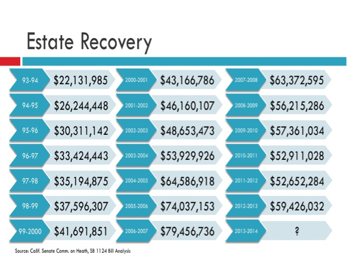

Federal regulations require states to pay the federal government a portion of the estate recovery collection amounts that are determined in accordance with the federal matching rate, known as the Federal Medicaid Assistance Percentage.
Under this provision, California would generally return 50% of the amounts collected. This does not include programs that have a higher matching rate - such as the ACA expansion population, which is entirely federally funded for the first three years of the expansion and declines to 90% by 2020.
This chart below shows how much California collected in revenue from estate recovery since 1993. California's share of any estate recovery revenue is placed in the State's Health Care Deposit Fund, which funds Medi-Cal, also known as Medicaid. Medi-Cal is a state program that provides health coverage to qualified, low-income California residents and seniors.
If you have more questions, consult an attorney. Remember, planning is the first step in preparing for your future.